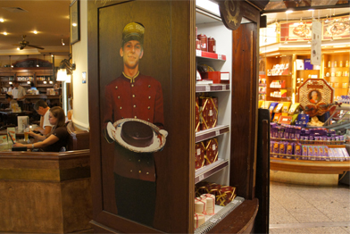

集合 9/07 3:00(現地時間) ウィーンへのフライトが5:50であるため、この日は、朝の3:00にロビーに集合。当然ロビーは、「ユニバ」のスタッフだけ。みんな眠い目をしたまま、各部屋ごとにチェックアウトの手続きを行いました。当然行きより荷物は重くなっています。深夜なので、バンタイプのビッグタクシーは呼べず、2台に分乗して空港へ。 |
|

リンツ空港にて 9/07 5:50(現地時間) ちょうど飛行機に乗る時には辺りが少し明るくなってきて、この幻想的な景色に出会う事ができました。ゆっくり写真を撮りたかったのですが、我々がなんせ搭乗客ラストになっていたので空港スタッフからやや冷ややかな視線を受けつつも撮影した1枚。まぁ、全然余裕だったんですけどね。Good bye Linz!! |
|

ウィーン空港にて 9/07 6:30(現地時間) トランジットが7時間近くあるため、ウィーン市内へ出るため高速鉄道「CAT」でウィーン市内へ出る事に。往復で18 EURO くらい。動き出してほとんどのスタッフは心地よい揺れとともに眠りの世界へ。発車してすぐ右側は工場地帯、左側は田園風景というなんともミスマッチな光景だった記憶はあるのですがその後がw |
|

ウィーン市内にて 9/07 8:00(現地時間) ウィーンは、大都市だけあってリンツと同じテイストはありつつも中心街は、道幅は格段に広くて歴史的建造物の間に新しいビルが建設中のスポットもありました。リンツの路面電車は割と近代的でしたが、ウィーン市内を走っている路面電車の多くはこのクラシックでキュートなテイストの路面電車。乗りたかったけれど乗れませんでした。 |
|

|  | 集合 9/07 13:30(現地時間) 行きは、バタバタの乗り継ぎだったため、帰りは各自空港で食事したりお土産を買ったりと自由時間を過ごしました。オーストリアと言えば、やっぱり「ザッハトルテ」。空港内でもいろんなショップで売られていました。市内で買い忘れてしまった人は、空港で買う事もできます。でも、夏はちょっと厳しいかも。 |
|

到着 9/07 7:35(日本時間) ロングフライトを経て久しぶりの日本。日本に帰ってきた途端、あの蒸し暑さがロングフライトの身に染みます。ともあれ、スタッフ皆何事もなく無事に戻って来れました。(あ、iPhone無くしたスタッフとかいたけどw)。元気のいいスタッフは、なんとこのまま「ユニバ」へ向かいました。お疲れさまでした!! |
|